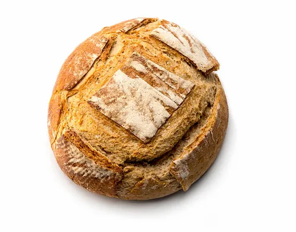
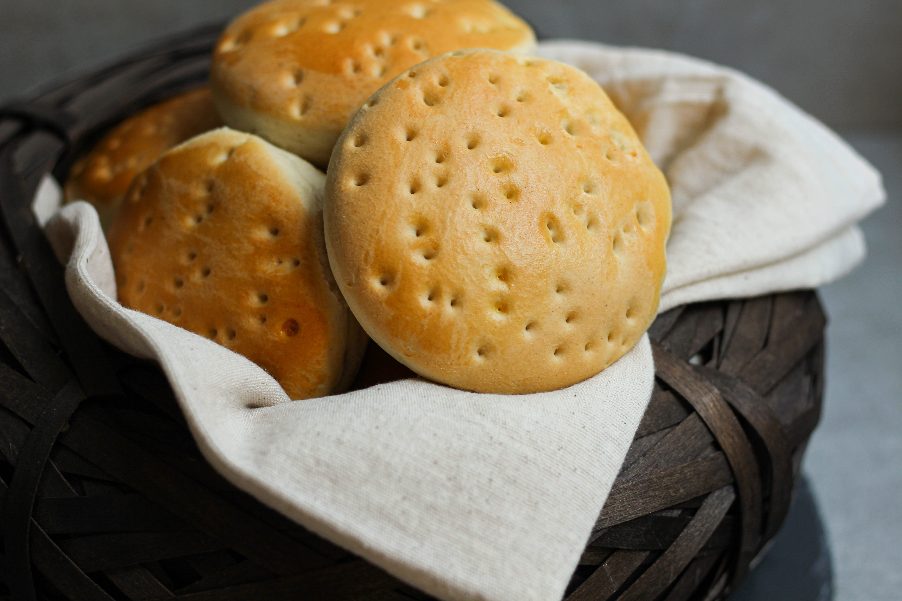
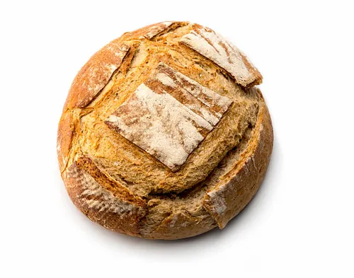
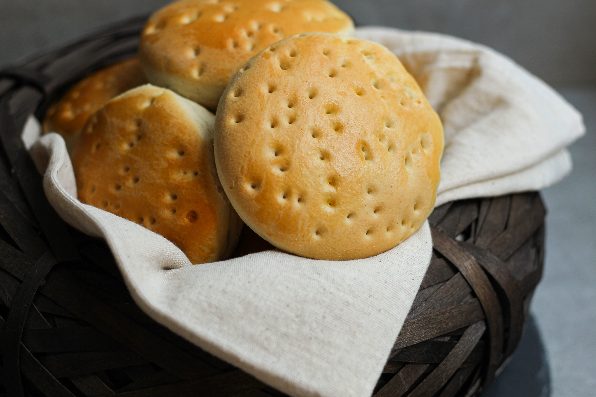
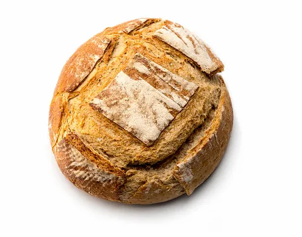
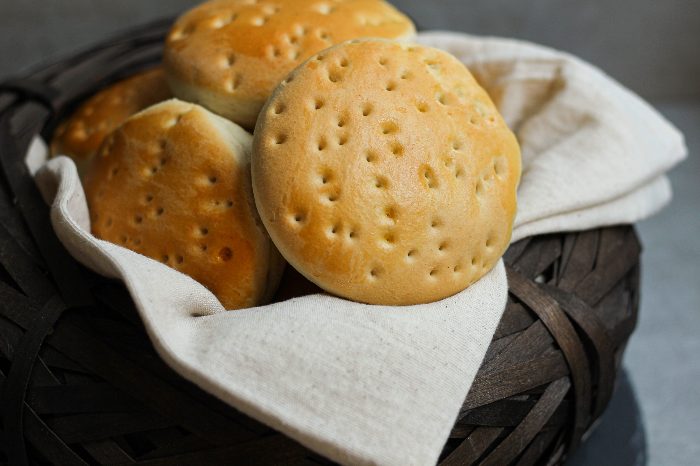
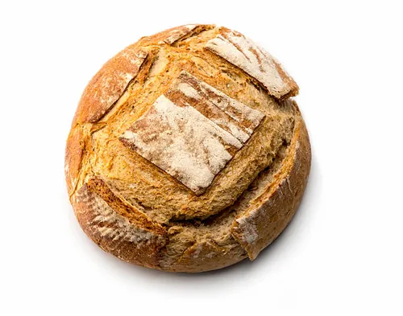
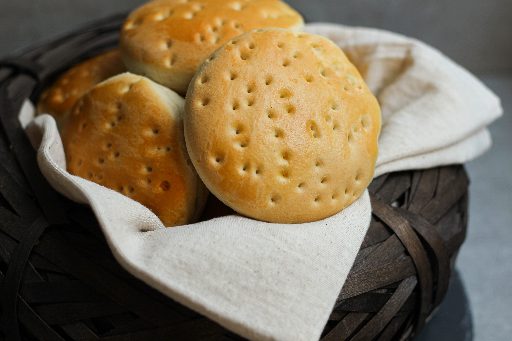
 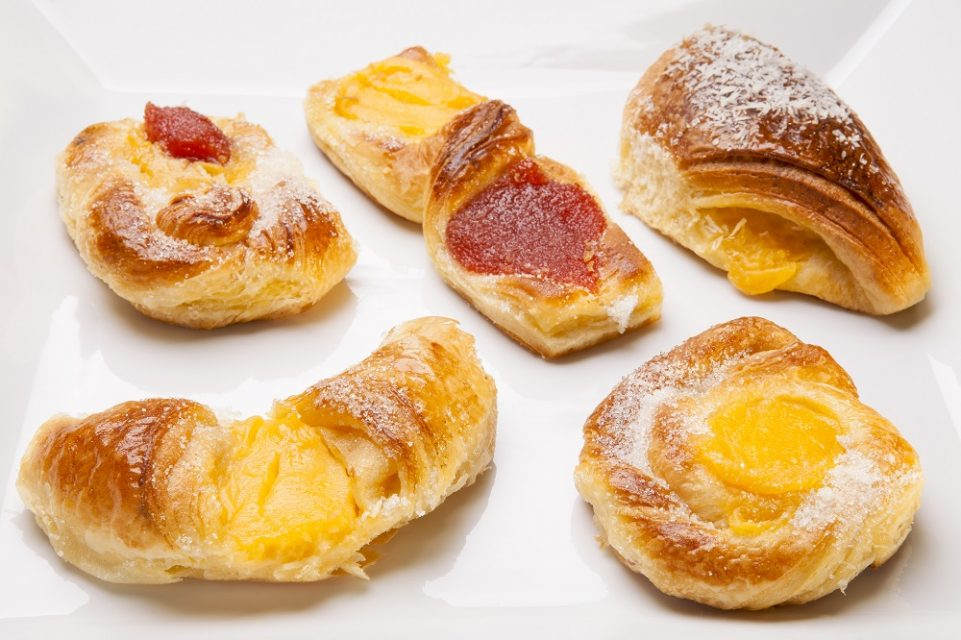
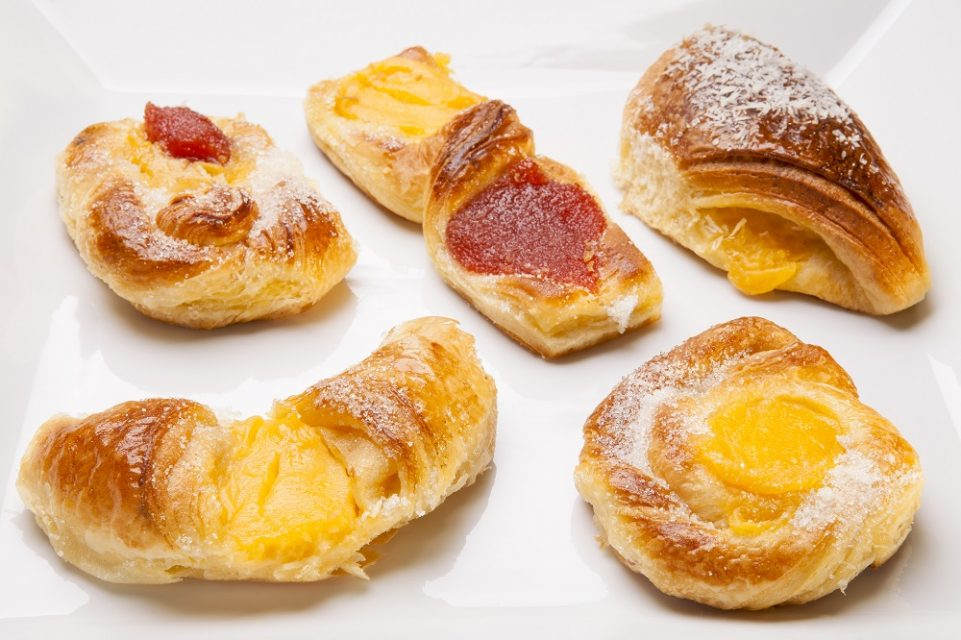
Somos una panaderia fundada en Italia por Bruno Busso y Mateo Fernandez en el año 1940 , la cual se mudo a Argentina en 1944, desde ese momento acompaña a los habitantes con las mejores tartas y facturas del pais
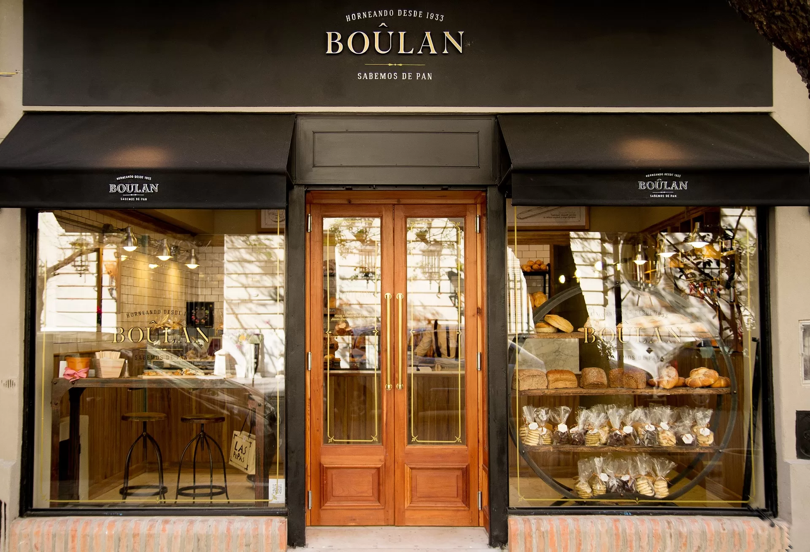
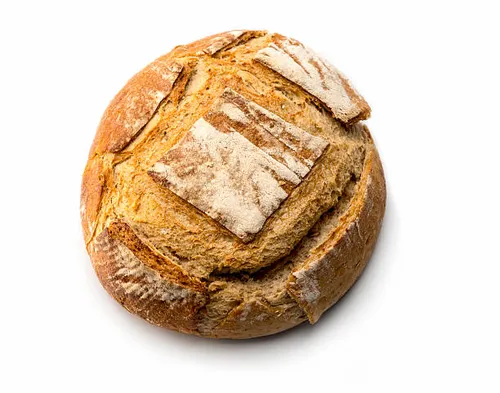
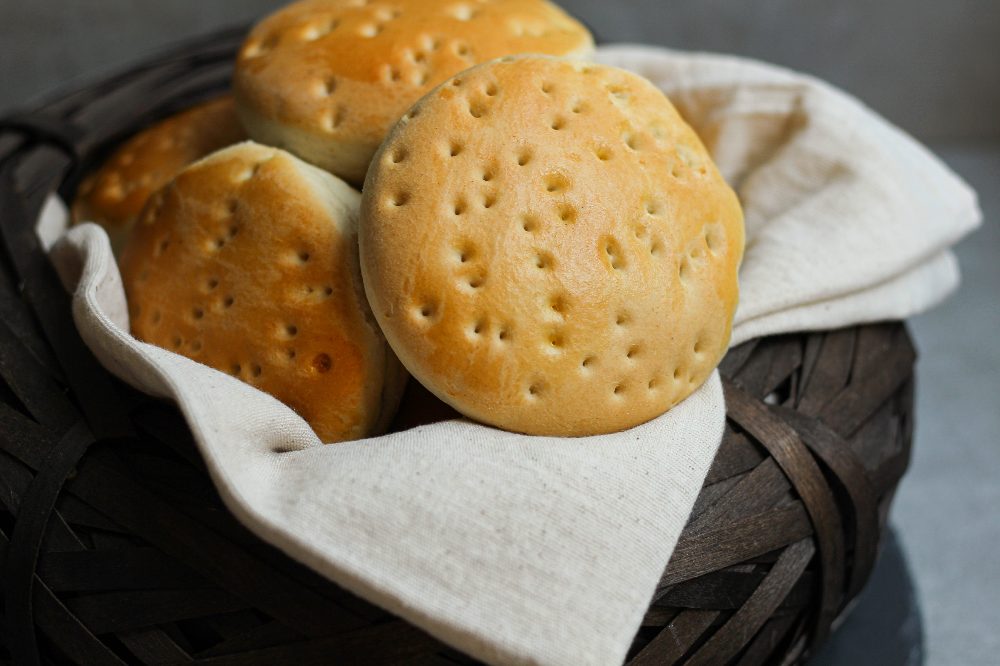
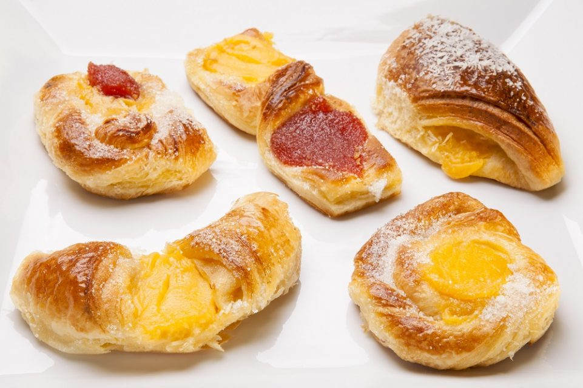